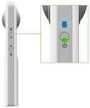
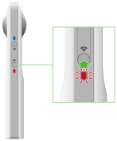

Connecting Your 360 Camera to Your Smartphone? Here's How to Find It!
Power on device
Click the wifi button to see a red or a blinking wifi logo
The Wifi password is on the bottom of each camera. Skip the first 2 letters and use the all the other numbers/letters. It will look like this: YL00 012361 So in this case the wifi password would be 00012361.
Solutions for Reoccuring Questions
I realized people are bound to ask questions that have been answered in the past.Now we can use our old tickets in Jitbit to answer these questions but what if we created some sort of public blog like Stack Overflow that is specific to finding threadsof our solutions.People seem to be quick with solving solutions themselves so this might give Another tool they can use to attempt to quickly solve before reaching out to IT.
11/29: I did a bit of research and realized Jitbit has no official way of publicly posting tickets which makes sense. The best way to go about this is posting a blog with our procedures from mperconti's notebook, or by creating small 20 second videos for each problem on the intranet.
Wiping Old HardDrives For Donation/Recycling Using KillDisk
With the deployment of new laptops comes a closet full of old ones. We decided it would be best to securely wipe the drives. I spent most of Tuesday looking at the different programs out there and found DBAN which is a program I can use to download onto a bootable drive using a program like Rufus. After trial and error I realized
Ken reached out with a program he looked into and paid for called KillDisk which has the same idea. It will create a bootable USB that will securely wipe a disk.
The Kill Disk Test:
The device I am trying this on currently is a Dell Precision 5510 with service tag: 28GNTC2...
The USB wipe was successful.
Now testing it on the 5510. I realized it has its own OS that is booted through the USB. The program automatically boots. There is a Virtual Fixed Drive and a Physical Drive. We are currently Wiping the Physical Drive which is a 477GB SSD. It says it will take 34 minutes.
The PhysicalDrive on 28GNTC2 is successfully wiped. The virtual fixed disk is not wiped though as it errors out.
Upon restarting I removed the USB stick and the device went straight into Dell Support Assist Finishing Dell Support Assist makes loud beep sound

US DoD 5220.22-M is the Erase Method I went with. It was also the default erase method when launching the program.